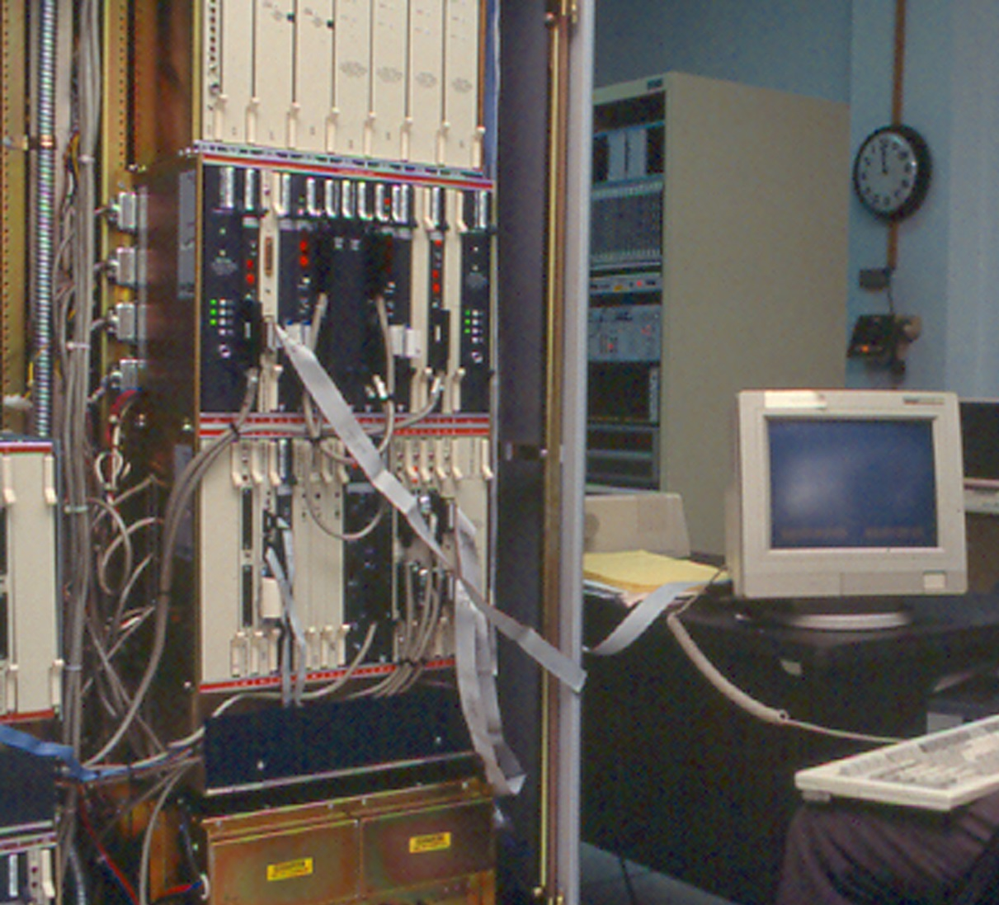
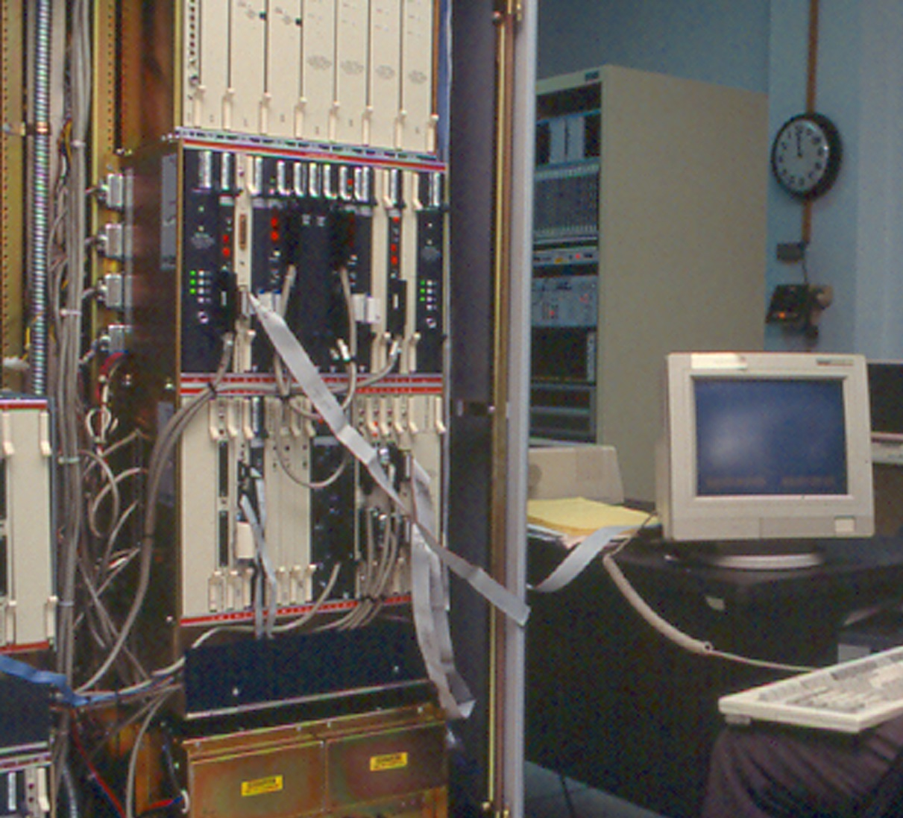

I would like to say thank you to all of you on this video call
this is going to be fun!
🥨🥨🥨🥨🥨🥨🥨🥨🥨🥨🥨🥨🥨🥨🥨🥨🥨🥨🥨🥨🥨🥨🥨🥨🥨🥨🥨🥨🥨🥨🥨🥨🥨🥨🥨🥨🥨🥨🥨🥨
🥨🥨🥨🥨🥨🥨🥨🥨🥨🥨🥨🥨🥨🥨🥨🥨🥨🥨🥨🥨🥨🥨🥨🥨🥨🥨🥨🥨🥨🥨🥨🥨🥨🥨🥨🥨🥨🥨🥨🥨
hand coding round robin
 



the rest of this workshop will be a kind of meditation on the current moment, or how you are feeling in this moment. think about how your relationship to your computer has changed. how have your relationships to people changed? how have the things you've learned about in this class shaped those changes?
p tag
round 1: create the opening and closing tag, place a phrase or question, something you've been thinking about recently, something you've been thinking about for a long time.
another p tag
round 2: longer form response. respond to what the person before you wrote. does it resonate?
class names
round 2: add a class name to either p tag on the page
css
round 3: notice the name of the class on one of the html tags, scroll up to the <style> section and write your first css style for that class name
ul and li tags
round 4: What are three things that you have learned about yourself in the past month?
blockquote or img
round 5: Please share a quote that you think the content on this page would want to hear. OR find an image!
p tag
round 6: respond to everything on the page so far. what might the subtext or hidden meaning be? feel free to add a css class and some styles when you're done
css practice! freestyle html!
round 7: find an unstyled element or an element that you would like to add style to! add an html element we havent used yet, practice writing something again! fill in with whatever you want!
h1 tag
back to home: what is the title of this page?